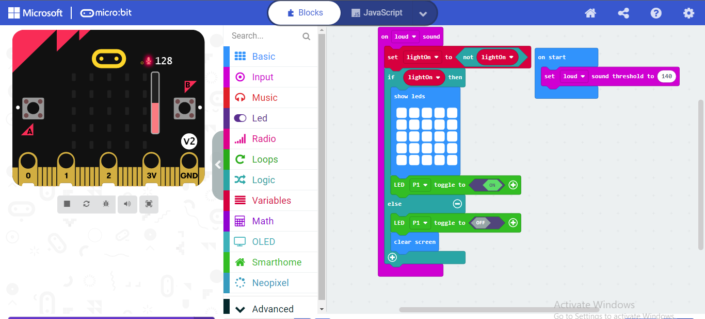
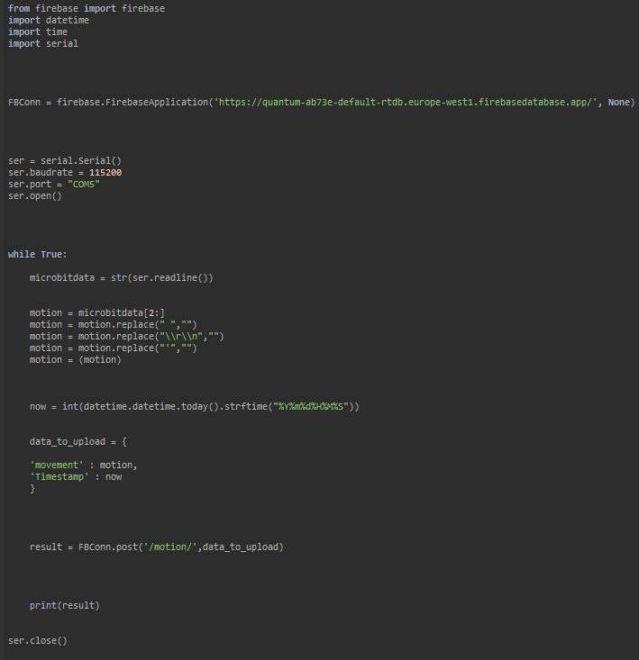

154072
Investigation and Planning
For my Leaving Cert Coursework, I am coding and assembling together a tech company for smart homes. This will include General Data Protection Regulations which is the way people can process and store personal data( this may include security items or even signing up to a website or browsing on one). The GDPR applies to all companies and corporations of all kinds in the EU. This will also include me when I am doing my coursework I will take this into account when I am coding my project.
I personally think I am quiet creative person so I came up with a few ideas and they may have been a bit too over-the-top, so I chose the most doable idea I had and modified it to fit the standards of higher level. I have done some research on some top brand products like the amazon Alexa and smart lights. I have also looked at security floodlights and spotlight cameras by multiple companies as well. I had looked at motion sensor lights from Ring and I had seen how the amazon Alexa worked from Amazon.
A few ideas I have had for my project so far are:
An Amazon Alexa based micro: bit where you can talk to it and it will do a command
Micro: bit motion sensor for security. This may be used outside or inside. It can either be a motion detection light or can be paired with a security camera to create a floodlight security camera or spotlight camera.
Micro: bit clap light. This would be used to turn on or off any chosen light just by clapping.
Micro: bit light sensor that turns on when it detects that it is turning dark. The light will automatically turn on when it detects darkness, this may be used outside on someone`s doorstep or porch.
Micro: bit sound alarm/ burglary alarm this can be used when a burglary happens this can be placed at any entrance point and when it is broken or moved like a door or window it will sound an alarm and send a notification to the owner.
Out of the 5 main ideas I have had I had chosen 2 projects to do and 3 to reject.
I had rejected the first idea because it was too complicated and it wouldn't be possible to do with a micro: bit.
I had also rejected the 5th idea because I didn't know how complicated the project will come out to be so I decided not to do it.
I also rejected the 4th idea because I thought it was a bit too basic and that it was not one of the best ideas to go with my tech company.
I accepted the 3rd idea because I thought it was a very cool idea where the owner can clap their hands and it will turn on or off their light and I thought that it was very fascinating.
I accepted the 2nd idea as my main product for my company because I have worked with motion sensors before and thought I would do good with it.
These two ideas I have chosen will target modern people as it has a modern style and it is automated, so the product does the stuff all by itself without the customer doing anything. This will also target other tech companies to do the same and make their products look modern and automated.
At this stage, I had also planned that I would make my website look modern and make it simple to use by also making it interactive in some ways.
Design
I had decided how I was going to do my website and what my products were going to be based on. When I had finished my research on my chosen products, I had chosen two out of the ideas I had to find out how I was going to achieve that standard for my product.
First, I had to decide what to use for my product which I decided to use the Micro: bit V2.

I had chosen V2 because it had more to offer as it was new and had more integrated components. I decided to use this for both projects as I have worked on it before, they were also available in the school, which made it easier for me as I did not have to source one from somewhere else. I also had to use the micro: Bit code website to code everything into the micro: Bit.
Product 1:
My first project was going to be about the motion Sensor light which I have worked with motion sensors before, so I knew what I was going to do. I was going to have to buy a PIR motion sensor as they are compatible with Micro bit`s. I had looked upon Amazon for the PIR sensor I wanted to use for my product.

This was the exact PIR sensor I had bought to detect motion and send that data to the Micro: Bit. This was going to be used for my first product and so was the Micro: Bit V2.
I was also going to use a small LED light that comes with the Discovery Kit for the Micro: Bit. Which I had bought beforehand when we were doing projects before on the Micro: Bit. This Discovery Kit comes with everything you need to make something simple like turning a light on. Making a siren and comes with a breadboard.

I am only going to be using the LED lights that come with it as they are small and perfect for a compact product. These small Leds are also perfect because they only need 2.5V to work, which is perfect because the Micro: Bit can only output 3V.

Product 2:
My second product is remarkably simple to do as it only needs an LED light and a Micro: Bit V2. This Product is going to be a light that turns on upon hearing the customer clap his hands. This product would be simple and easy to do for the customer. This can be in a compact form as well because it will not take up much space at all. I got this idea from multiple movies I had watched where the main character went into a room and clapped his hands just to turn the light on which amazed me.
For my Website, I will use Replit to code my website in HTML, CSS, and JavaScript since I have used it before and had lots of experience using it. I will also be using Thonny with Phyton to code the input from the micro bit to my chosen database which I will be using Firebase which I have also had lots of experience using.
For my Website, I will make it compact and easy to navigate through. I will also make it look modern and try to have animations put into it if possible. I will have 5 main headers which will be named Home (used to show data from firebase), Products (used to show products), About (Information about the company), Contact (A way to contact the company), and Portfolio (Where I will show my portfolio on the Website). I will also try to have a Word which is a button that will lead to the main page where there will be nothing written on it.
Implementation and Testing
I decided first to do my Micro: Bit products first and then base my website from there. Since I was using Micro: Bit V2 it had more options for me to do more stuff like an in-built microphone for my clap Lights. The code was practically easy to do as i only had to create code for the micro bit to listen through the microphone and turn on the light. I did this by setting a maximum point on the microphone so when it reaches that point (ex. With a loud clap), it will turn on the light. It will do the same when turning off the light.

The code above worked perfectly the first time so I didn't have to make any changes to it as it done what i intended it to do.
The next product I thought it would be harder to code but was very easy to code. This was for the motion sensor product and I used makecode for this as well. I had made the code and had a variable called motion and had an if statement in it.
I also had to add a series code for the information from the microbit code to go to the firebase. I only done this for the motion sensor light as it wouldn’t make sense if the clap lights sent information to firebase. The serial code was quite hard to do and had to look at the book in order to do it correctly.

The code is the picture above is the code I used to detect the motion and send that data to firebase with the help of python
We had to use python as we had done series on that before and I had to look at videos in order to do it correctly and had to change the code a bit to match my microbit code so it would be able to read the data coming back from the microbit. There was also an issue with the code not working because thonny was in a newer version and it wouldn’t work. So I had to download an older version of thonny which was V3.6.0 and it worked after that. I had also customised the code so it only sends information of when motion is detected or else it would be sending constant data of no motion being detected.

After I had done all my products I had started to code my website. My website was going to be simple and modern and with easy accessibility to all webpages. I had went a red and black look for my Website with a white text to make it pop out.
I first decided to go with a normal nav bar with a black background But then I had decided to change it and put a picture in the background and the background of the nav bar to make it look aesthetically pleasing to our customers who visit the website.
I had decided to have a main page eith nothing on it as it will act as a welcoming and it will shoe the scenery of the picture and how the website is layer out which will have 4 more webpages linked to it at the top nav bar. I will have 4 main pages which will be the Home,Products,About and Contact Pages.
Home Page:
The home page will be storing the data of the microbit from the firebase. It is connected by firebase with javascript and will bring in data in realtime.
Product Page:
The product page contains 2 more webpages which will lead to the actual products and will give up more information about the product.
About page:
The about page has more information about our company and also shows our intentions in the world.
Contact page:
In the contact page I have a contact form which will lead to forebase also and will be stored their.
I had finished my microbit in after christmas with both projects done. I had done then started coding my project a bit to get an insight about how i was going to make my website look like. Which was during janurary and febuary. IN the last week of febuary i had started coding my thonny so the microbit can connect to the firebase and go back to the Html in the website. When i was finished that i had made some last finishing touches to my website.
I had made some finishing touches with the CSS as i wanted to make the website looks good and aesthetically pleasing to our customers. I had chosen the main colour of white as the text and black and red scheme for my website as black as a primary and red as a secondary colour. I had then chnaged the colour from red to a crimson red.
My video descirbes and show how i had reached the requirement for the advanced part of the project and how i achieved the basic requirement as well.
also my video for my project is no longer than 5 minutes and is not bigget than the 1GB limit.
I did a lot of testing as i had a lot of code in my project including css and javascript and HTML in my website and i had also made more thant 6 webpages so i had to test if they were all linked and if they all worked the same and had the same theme.
I didnt make any changes to my website and it came out as i expected it to come out. I had also added in animations to the Nav bar as i had some extra time and wanted to try it out.
Also for the nav bar i had taken my old project as a reference since i had made a nav bar before but didnt look like this one does right now.
The "Quantum" word on the top left is a button that brings you back to the main page so it acts like a secret button and i have a few see throught buttons with a hover factor so when you hover over the button it will highlight it.
Evaluation
I think i have done a very good job with my coursework and i would love to do it again but with some more time to make the website and products and i would also like to be able to make the actual product as it would be a fun thing to do. I think i have reached most of the requirement of of the advanced and basic project. I do think i have done very good on this including my thonny and firebase along with the microbit and HTML. I also think i have done my video very well and have decribed everything as well as i could have in the 5 minute mark and 1GB limits. For the future of my Company i would like to make more products and enchance my website with more components such as a log in and sign up page with a validation system. I did have a few issues on my project on the way to reach my idea but i have achieved everything i wanted to achieve with this project by making a automated system, a website that looks simple and modern and it is easy to use, and also a key factor i was so excited to do this project was i wanted to find out how to make the microbit data go to firebase and then to my website which i have also achieved in some way. I had said before how i had solved all the issues in my testing process and how i made it work. I had fun making this project and would like to do it again but more advanced. I have met the requirement and hope my customers like my website and products.
Video: